Cada detalhe deste espaço foi feito para lembrar um pouquinho do amor imenso que sinto por você todos os dias.
"Todas essas histórias que marcaram nossa vida e me fizeram me apaixonar mais por você..."
Nossa primeira conversa aconteceu na mesma noite em que a gente se conheceu, haha. Você pediu meu número e, sem perceber, não sabia que ia conhecer o amor da minha vida. Confesso que, no começo, eu não ia muito com a sua cara. Eu te achava meio autoritária e, como nunca fui muito fã de seguir regras, isso me incomodava um pouco. Mas a vida tem um jeito engraçado de surpreender a gente, né?
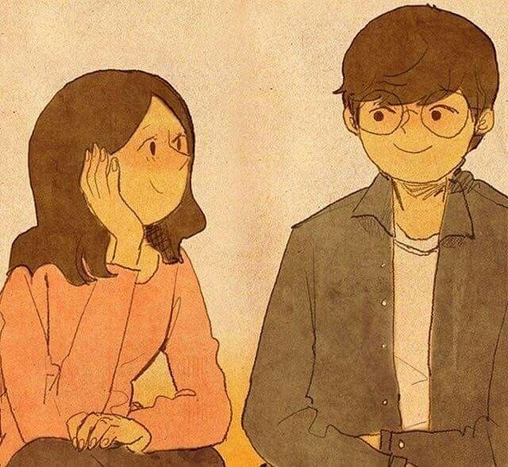
Por umas duas semanas seguidas, virou rotina encontrar você todos os domingos na igreja católica. E, sinceramente, eu jamais me imaginaria frequentando um lugar assim. Mas, de alguma forma, os domingos ganharam um significado diferente. Nós estávamos nos preparando para a peça que iríamos apresentar e, durante a semana, conversávamos todos os dias pelo WhatsApp. O que eu não percebia naquela época era que aquelas conversas estavam se tornando uma das melhores partes dos meus dias. E então chegava o domingo. Eu contava os dias para ele chegar, não por causa dos ensaios ou da peça, mas porque era mais uma oportunidade de te ver. Era engraçado como algumas horas ao seu lado conseguiam deixar minha semana inteira mais leve. Aos poucos, sem que eu percebesse, você deixou de ser apenas a garota da peça e passou a ser a pessoa que eu mais queria encontrar, a conversa que eu mais esperava e o motivo pelo qual os domingos se tornaram os meus dias favoritos.
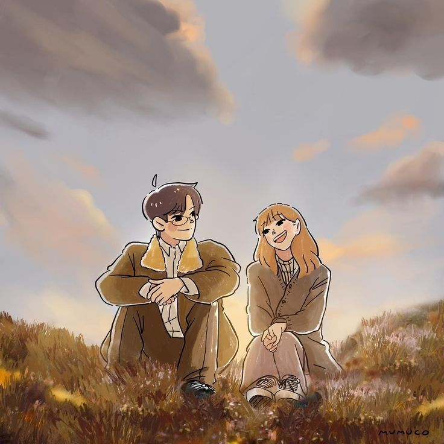
Então chegou o dia da peça da igreja. Eu nunca gostei de ter um público com toda a atenção voltada para mim. Só de pensar em subir naquele palco, meu nervosismo já aparecia. Mas você, com suas palavras de consolo meio tortas e do seu jeito único de tentar me acalmar, conseguiu me convencer a seguir em frente. No final, a peça foi boa. Talvez não perfeita, talvez até um pouco boba e mal ensaiada em alguns momentos, mas havia algo nela que eu nunca vou esquecer. Em meio à atuação, nossos olhares se encontraram. Foi apenas um instante, mas para mim pareceu muito mais. Eu esqueci as falas, esqueci o público e quase esqueci que estava em um palco. Tudo o que eu conseguia perceber era você ali, tão perto de mim. Meu coração acelerou de um jeito que eu não sabia explicar. E, pela primeira vez, comecei a suspeitar que aquela ansiedade pelos domingos, aquelas conversas intermináveis e aquela vontade constante de te ver talvez significassem algo maior do que eu estava disposto a admitir. Naquele momento, entre cenas mal feitas, nervosismo e improvisos, eu percebi que o que mais me deixava sem jeito não era o palco nem a plateia. Era você.
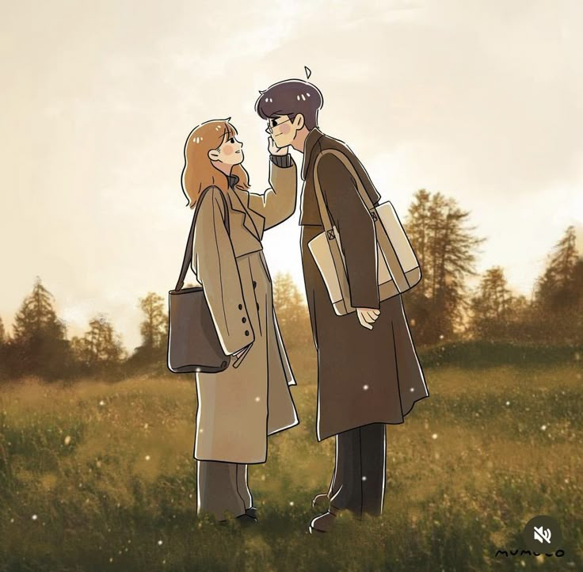
A primeira série que assistimos juntos não foi sentados lado a lado no sofá. Foi através de uma tela de celular: você na sua casa e eu na minha. Pode parecer algo simples para qualquer outra pessoa, mas eu nunca consegui esquecer o que senti naquela noite. Havia uma sensação de conforto que eu não sabia explicar, como se, mesmo longe, você estivesse de alguma forma ali comigo. Eu me agarrava ao travesseiro e imaginava como seria ter você ao meu lado. E, para ser sincero, eu mal prestava atenção na série. Minha atenção estava quase toda nas mensagens que apareciam no chat, nas suas reações, nas suas piadas e em cada conversa que surgia entre um episódio e outro. Essas noites ficaram guardadas no meu coração e tenho certeza de que vão permanecer lá para sempre.
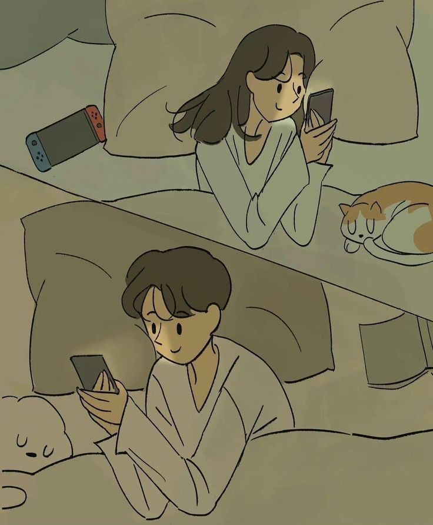
Depois de meses de conversas, risadas, planos e sonhos compartilhados, finalmente chegou o dia que eu tanto esperei. Depois de tanto tempo imaginando como seria, nós finalmente podíamos nos encontrar de verdade. Podíamos nos abraçar sem precisar nos despedir por uma tela, olhar nos olhos um do outro sem a distância entre nós e, claro, podíamos finalmente nos beijar. E beijar você foi como encontrar algo que eu nem sabia que estava procurando. Foi como chegar em casa depois de uma longa viagem. Como sentir paz depois de um dia difícil. Como ver um sonho que viveu tanto tempo na imaginação finalmente se tornar real.
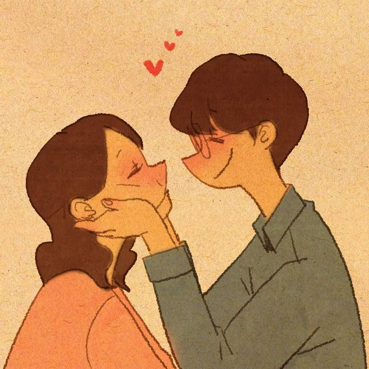
Conversas profundas, risadas soltas e o relógio correndo sem que a gente se importasse. Eu passaria mil noites em claro se fosse para continuar te ouvindo sorrir.
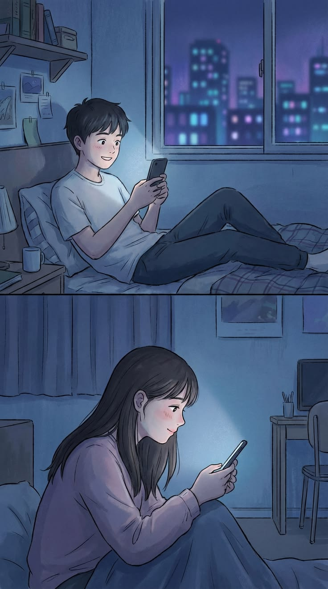
Com o coração acelerado e a maior certeza do mundo, eu te pedi para dar o passo mais bonito da minha vida. Você disse sim, e eu me tornei o cara mais sortudo.
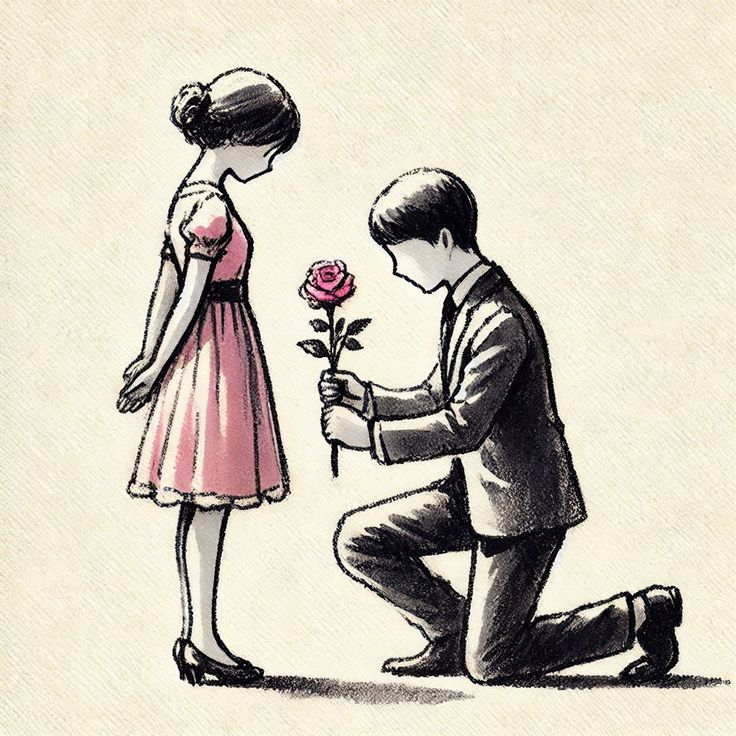
Adormecer e acordar ao seu lado me deu a sensação exata de ter encontrado o meu lar. O seu abraço é o melhor lugar do mundo para se estar.
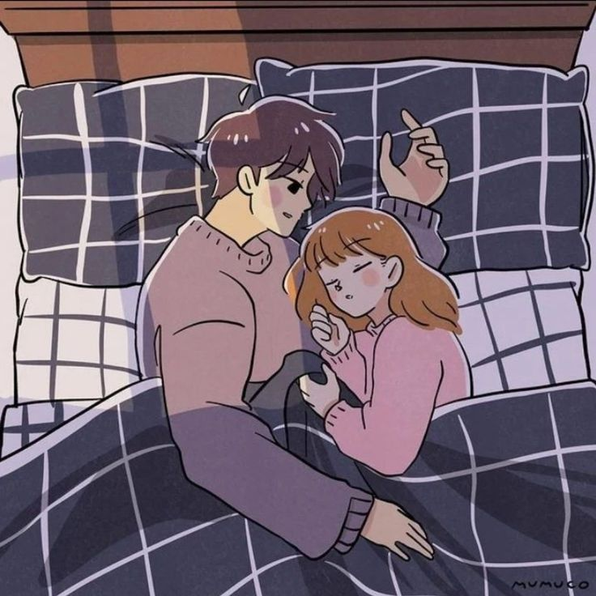
Você me ama? 🥺
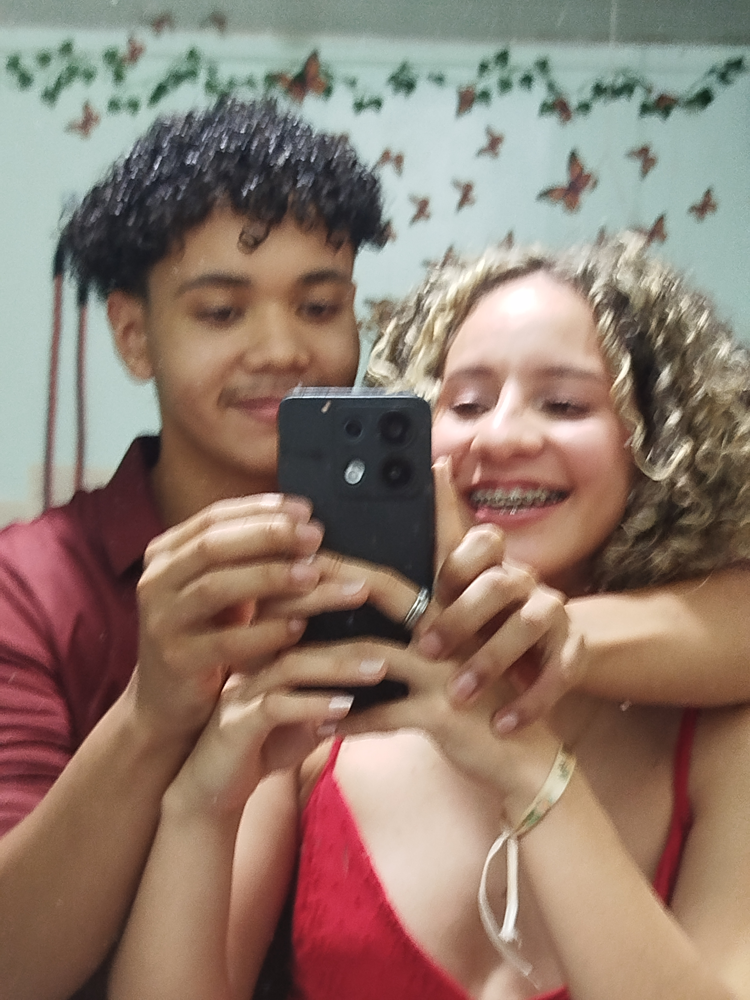
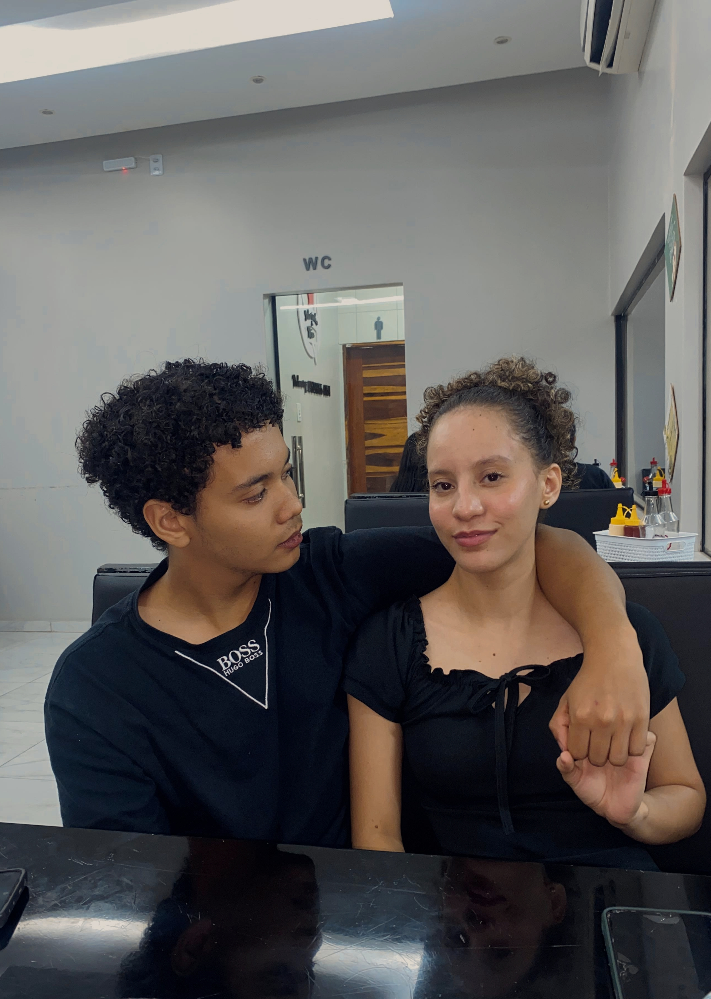
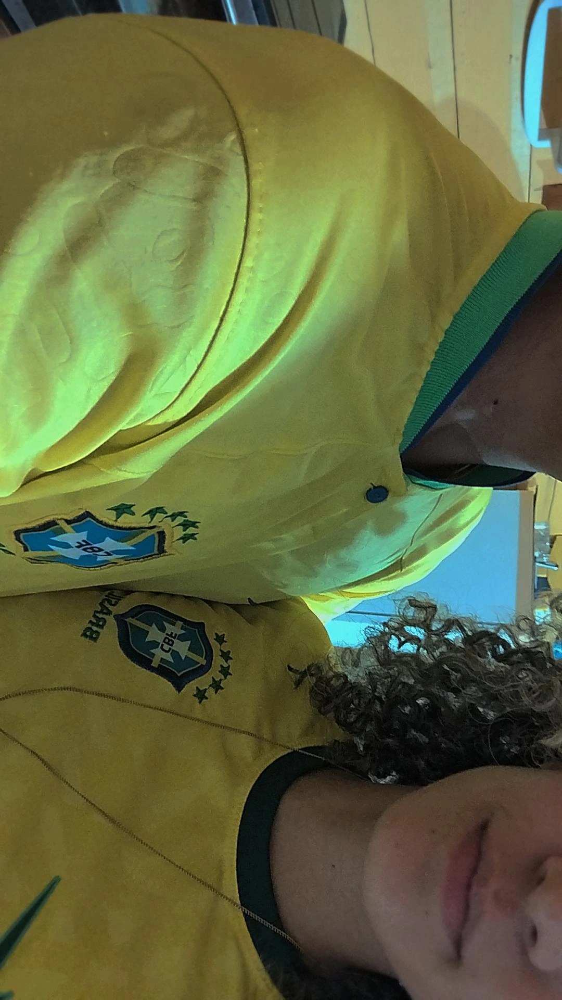
Clique e descubra
A forma como ele ilumina o ambiente e desarma instantaneamente qualquer dia ruim que eu tenha tido.
A maneira profunda como você me olha, que transmite uma paz imensa e me faz sentir inteiramente amado e seguro.
O encaixe perfeito e a doçura que me fazem esquecer o mundo lá fora toda vez que nossos lábios se tocam.
O meu lugar favorito no mundo. É onde eu encontro abrigo, conforto e a certeza de que estou exatamente onde deveria estar.
Aquela fragrância única que fica na minha mente, na minha roupa e que me traz uma sensação instantânea de aconchego.
A beleza única do seu cabelo, que molda perfeitamente o seu rosto e que eu amo ficar admirando e acariciando.
O cuidado, a atenção e os pequenos gestos diários que me mostram a grandiosidade e a pureza do seu coração.
O som que acalma a minha alma. Ouvir você falar, rir ou simplesmente me chamar é a melhor melodia do meu dia.
A nossa sintonia, as risadas soltas e os assuntos que nunca acabam. Passar o tempo conversando com você é sempre fascinante.
Cada cena, cada história e cada trilha sonora me faz pensar no roteiro lindo que estamos escrevendo juntos.
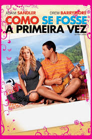
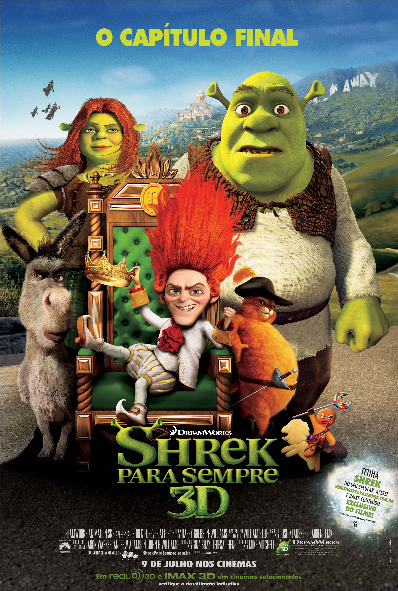
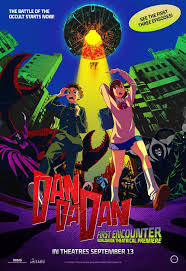
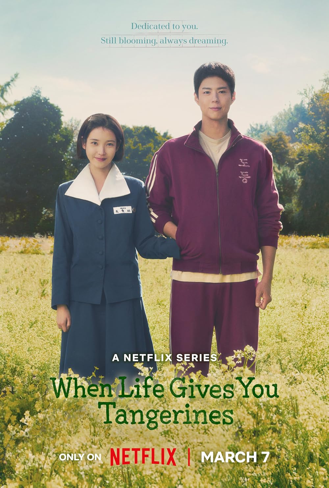
Cada melodia e cada letra parece ter sido escrita sob medida para contar um pedacinho do que sinto por você.
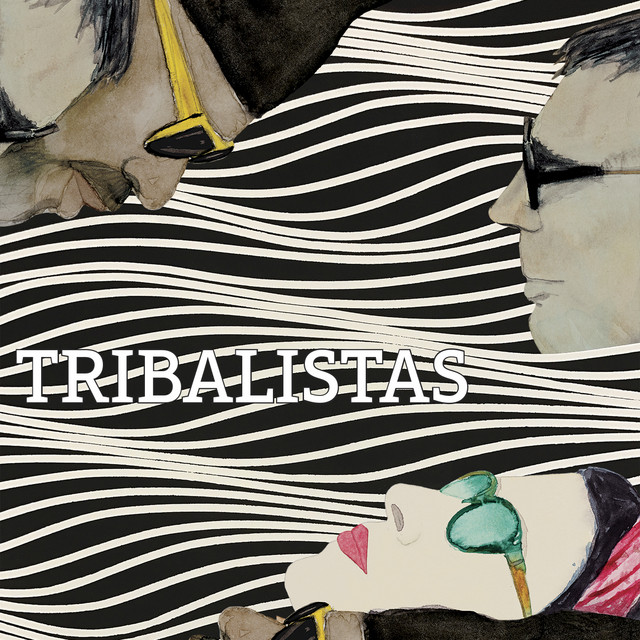
"Se um dia eu te encontrar Do jeito que sonhei Quem sabe ser seu par perfeito E te amar do jeito que eu imaginei"
"Ainda bem Que agora encontrei você Eu realmente não sei O que eu fiz pra merecer Você"
"Olha que coisa mais linda, mais cheia de graça É ela, menina, que vem e que passa Num doce balanço a caminho do mar."
"Assim como o nosso amor, este site terá atualizações e nunca irá acabar..."
Nossa história continua sendo escrita todos os dias, então aguarde por novas atualizações e novas memórias por aqui.